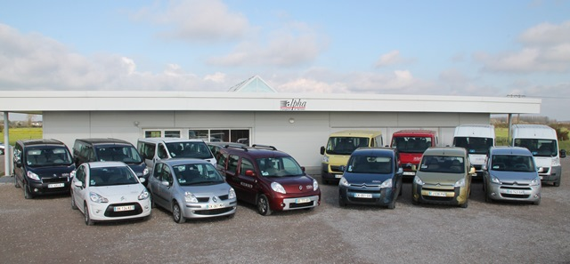
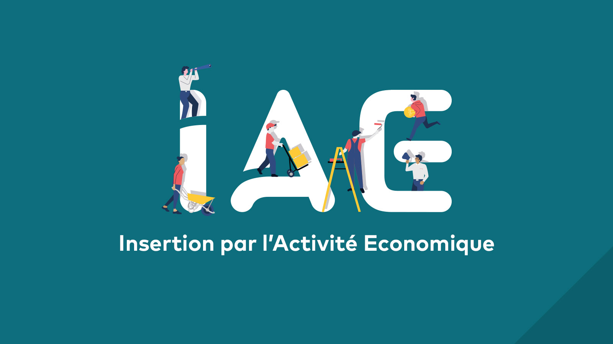
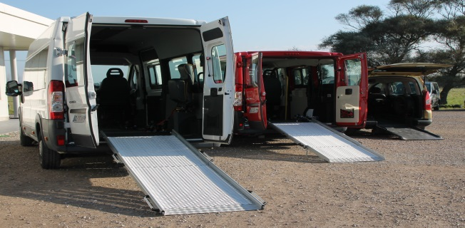

Qui sommes nous ?
Alpha transport & services

ALPHA TRANSPORT & SERVICES
Depuis 1991, nous redéfinissons le transport et l'aide à domicile en
plaçant l'humain au cœur de toutes nos actions. Notre équipe
dévouée s'engage à créer des connexions significatives en offrant
bien plus qu'un simple service. Chaque déplacement devient une
occasion de tisser des liens, chaque assistance à domicile est
imprégnée de photo chaleur et de respect.

Nos chauffeurs ne sont pas seulement des conducteurs, ce sont des
compagnons de voyage compréhensifs, assurant des trajets en toute
sécurité tout en apportant réconfort et compagnie. De même,
nos professionnels de l'aide à domicile transcendent le simple soutien
en offrant une présence attentive et des services personnalisés qui
répondent aux besoins uniques de chaque individu.

La clé de notre approche repose sur le professionnalisme de nos
équipes, formées pour allier compétence technique et sensibilité
humaine. Nous croyons que chaque interaction est une opportunité
de faire une différence positive dans la vie de nos clients. Chez nous,
le transport et l'aide à domicile sont bien plus que des services, ce
sont des moments partagés, des sourires échangés et une
communauté grandissante unie par le respect et la bienveillance.